Para la elaboración de conjuntos en los diagramas ,es necesario saber y conocer algunos signos ,para poder elaborar los onjuntos ,es por esto que en este apartado ,conoceras con determinación algunos sifnificados.
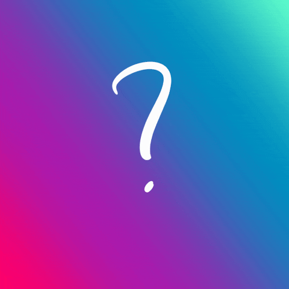
Glosario de diagrama de Venn
CONJUNTO
Una colección de cosas. Dada la versatilidad de los diagramas de Venn, las cosas pueden ser realmente lo que quieras. Pueden ser elementos, objetos, miembros o términos similares.
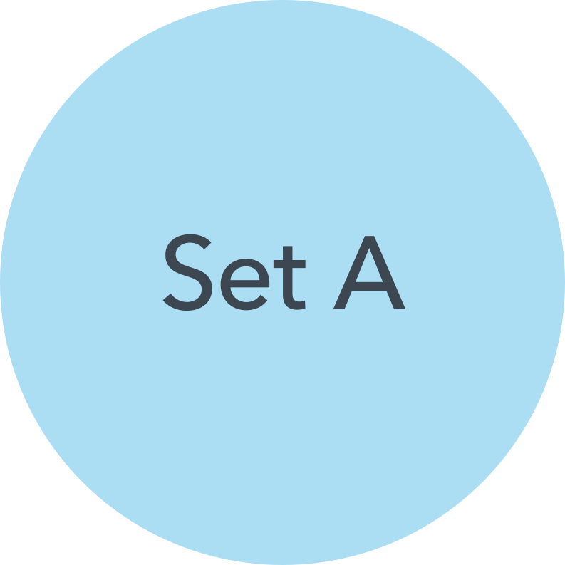
UNIÓN
Todos los elementos de los conjuntos.
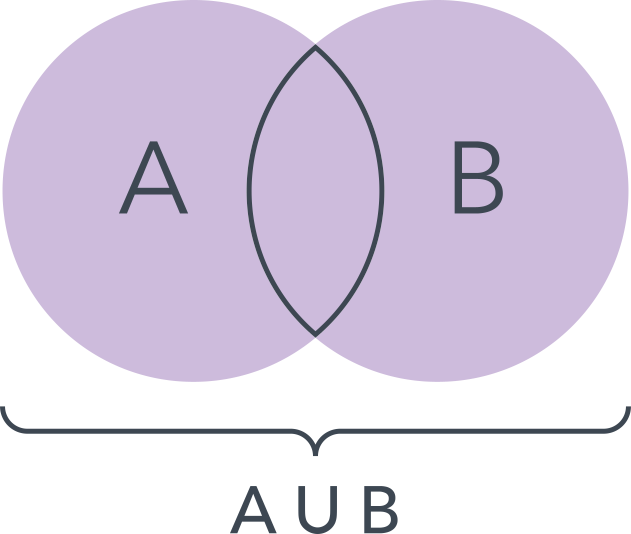
INTERSECCIÓN
Los elementos que se superponen en los conjuntos. A veces se denominan "subconjuntos".
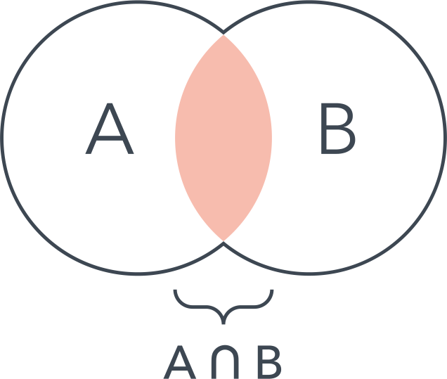
DIFERENCIA SIMETERICA ENTRE 2 CONJUNTOS
Todo, excepto la intersección.
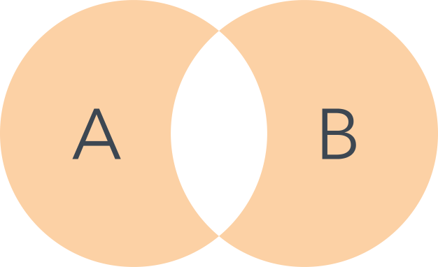
COMPLEMENTO ABSOLUTO
Todo lo que no está en el conjunto.
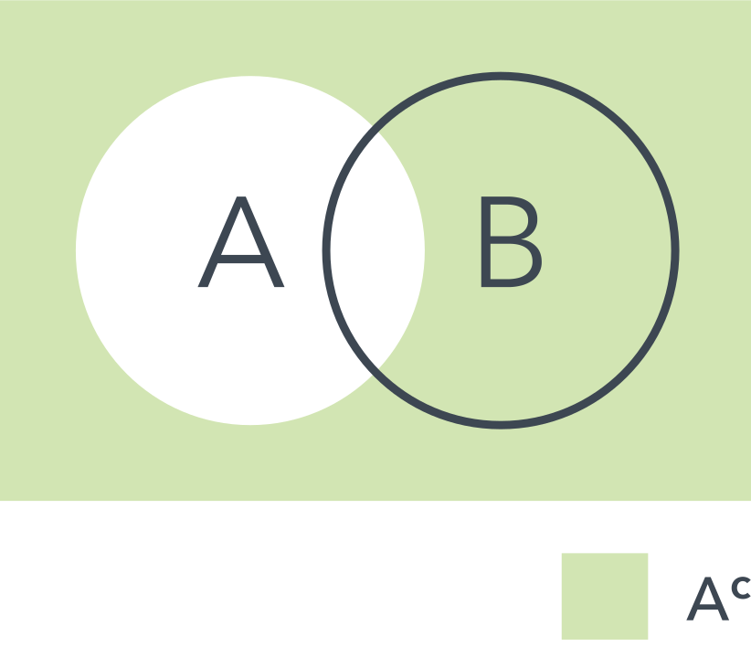
COMPLEMENTO RALATIVO
En un conjunto pero no en el otro.
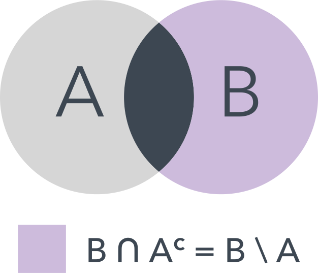
DIAGRAMA DE VENN A ESCALA
También se denomina "área proporcional". Se modifica el tamaño de los círculos (y otras figuras) en base a su representación proporcional de la totalidad.
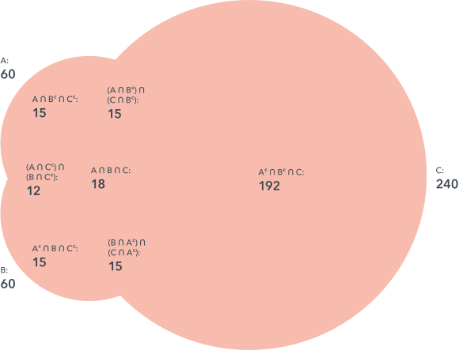
TRIÁNGULO REULEAUX
Figura que se forma a partir de la intersección de tres círculos o figuras, como en un diagrama de Venn.
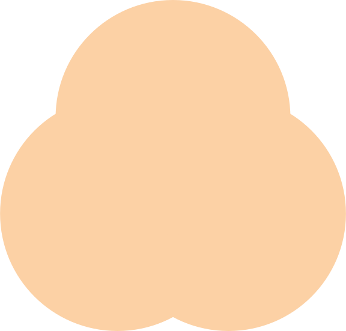
NOTACIONES DEL CONJUNTO
Los conceptos ilustrados en los diagramas de Venn se expresan con notaciones matemáticas, como aquellas que representan conjuntos y subconjuntos (entre corchetes), uniones (con un símbolo similar a una U) e intersecciones (con un símbolo similar a una U dibujada al revés).
TEORIA DE CONJUNTOS
La antigua rama de la matemática que se centra en los conjuntos.
Formulario
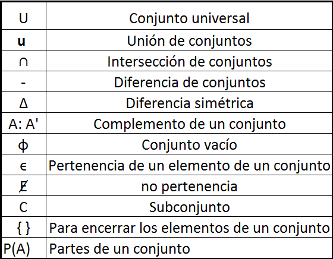
Ejemplo
Supón que nuestro universo es de mascotas y queremos comparar qué tipo de mascota tenemos en común los miembros de nuestra familia.
El conjunto A contiene mis preferencias: perro, pájaro y hámster.
El conjunto B contiene las preferencias del miembro B de la familia: perro, gato, pez.
El conjunto C contiene las preferencias del miembro C de la familia: perro, gato, tortuga, serpiente.
La superposición, o intersección, de los tres conjuntos incluye solamente al perro. Al parecer, tendremos un perro.
Por supuesto que los diagramas de Venn pueden ser mucho más complicados que esto, ya que se usan ampliamente en diversos campos.
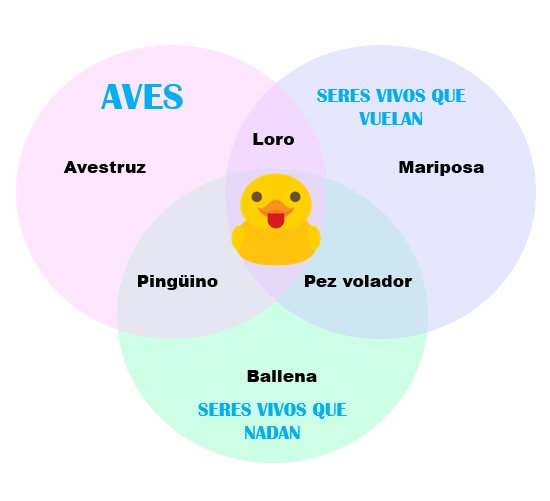
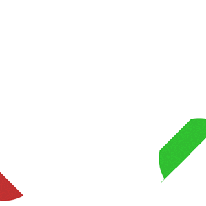